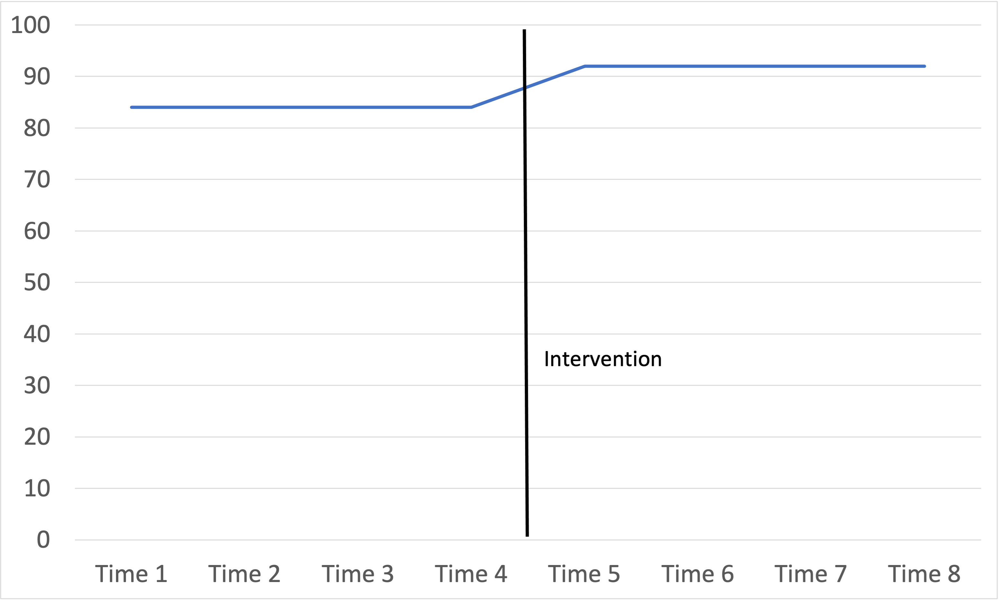
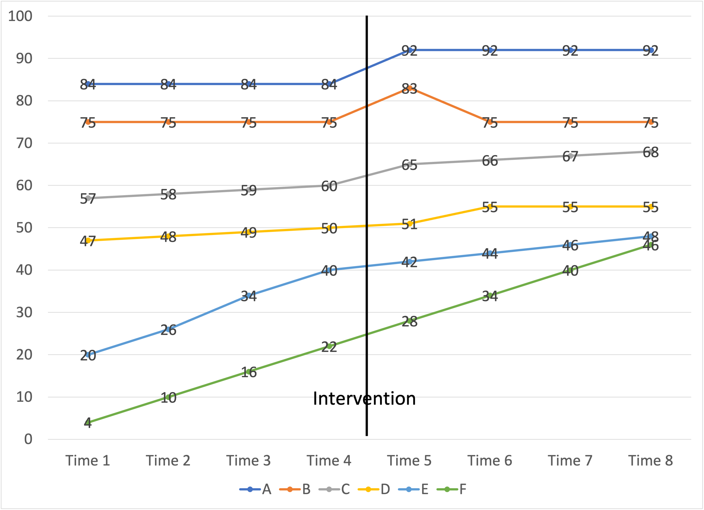

Quasi-Experimental Design
Required reading:
To evaluate a program
In education, we often design programs to improve instruction or aspects of schooling to improve outcomes for students. Most programs cost time, money, or other limited resources.
Consider, for the moment, one program that perhaps you have led, implemented, inherited and maintained, or otherwise invested your attention into yourself. Inevitably the question will arise: How well is this program “working”? Do the benefits it yields outweigh the costs? These questions depend on a fundamental question which is our focus for this module:
What counts as evidence? How can we know?
When I worked in districts as the assessment director, questions of program evaluation came up many times. In many cases the originating question was, “Let’s look at the data!” and in most cases that really meant, “Some students were part of a program. Let’s look at their data.”
Often the data were scores on a common assessment of student achievement. This included districtwide assessments like DIBELS, STAR, or MAP, or the annual state assessment such as the WASL, the MSP, or the SBA. Students were often selected for a program on the basis of low pretest scores (“Level 1s” and “Level 2s”) and the outcome measure was often the same assessment given in a later testing window.
Favorable outcomes for this group then counted as sufficient evidence of program efficacy, and more often than not, the de facto evaluator was the person most invested in the program and bent on its survival or expansion (for better or worse).
Seldom did it occur to people (or if it did, nobody said anything) what would likely have otherwise happened to these students without experiencing the program. Were they better off experiencing this program than the likely alternative? What about very similar students who could have experienced this program but for whatever reason didn’t? What were their outcomes?
This whole discussion rests on philosophical assumptions (or commitments, or investments) that we can more or less systematically cause better student outcomes and more or less measure this causation. Put another way, it’s common to justify the merit or importance of one’s work with causal inferences that the work makes a difference.
Questions about how, when, on whom we collect, organize, and analyze evidence to make causal inferences are questions of research design. Design is the framework for a study.
What counts as convincing evidence?
Let’s begin by consider a hypothetical scenario of elementary reading, depicted in Table 1. Fifty third grade students score below grade level (40th percentile) on their spring SBA English Language Arts assessment. All of the students return to the same school in the fall for their fourth grade year. Half are assigned to the Innovative Reading Program while the other 25 receive Tier 1 grade level instruction. In the spring, all 50 students take the Grade 4 SBA ELA assessment.
Table 1
| N | Pretest | % low income | Placement | Posttest |
|---|---|---|---|---|
| 24 | 2398 (40th) | 51 | Tier 1 Grade Level Instruction | 2474 (50th) |
| 26 | 2401 (40th) | 49 | Innovative Reading Program | 2523 (70th) |
When the scores become available shortly, they bring good news. All 50 students meet the Level 3 proficiency standard. The average scores of the 25 students in the Tier 1 grade level classroom score is 2474 (roughly the 50th percentile). They’ve all caught up to grade level. The results of the students receiving the Innovative Reading Program are even better: their average SBA score is 2523, the 70th percentile for fourth grade. Proponents of the program rejoice. “Not so fast!” cry the program critics.
Threats to validity
Here are their objections:
“Of course their scores increased! Reading was a district and school focus. Everyone was talking about it last year. It was in the air.” This threat to validity, an alternative explanation for the outcome of the experimental group apart from the treatment itself, is called history.
“Of course their scores increased! Kids grow and mature anyway. Studies have shown gains in scores for kids with no formal schooling at all.” This threat to validity, an alternative explanation for the outcome of the experimental group apart from the treatment itself, is called maturation.
“Of course their scores increased! Having already taken the third grade SBA test, they knew what to expect of the test. They knew how to take it.” This threat to validity, an alternative explanation for the outcome of the experimental group apart from the treatment itself, is called testing.
“Of course their scores increased! The fourth grade SBA was easier for fourth graders than the third grade SBA was for third graders.” This threat to validity is called instrumentation.
“Of course their scores increased! Students selected on the basis of extreme low scores will always score higher on average on the posttest because extreme low scores are extreme because of the combined effects of true achievement and measurement error.” This threat to validity is called statistical regression.
Each of these is a threat to the internal validity of a program’s treatment. Internal validity is the “basic minimum without which any experiment is uninterpretable: Did in fact the experimental treatments make a difference in this specific experimental instance?” (Campbell and Stanley (1963), p. 5)
Critics raise a couple of additional objections:
“These results are limited. The students selected for the program were less impacted by poverty. They had more favorable demographics. They were different students!” This treat to validity is called selection bias.
“These results are limited. The students selected for the program were able to use their advantages to learn at a faster rate.” This treat to validity is called selection-maturation interaction.
“These results are limited. The students selected for the program were sensitive to the test. They knew they had scored below standard in the spring so they tried harder the next year.” This threat to validity is called reactive or interaction effect of testing.
“These results are limited. The students selected for the program had been low and received more attention and knew that we’re watching them closely.” This threat to validity is called multiple-treatment interference.
These are threats to the external validity of a program’s treatment. External validity “asks the question of generalizability: To what populations, settings, treatment variables, and measurement variables can this effect be generalized?” Threats to external validity limit the generalizability of the results to broader populations.
What do you make of these objections, in light of the data and what you know of the design of the treatment? Are some more credible than others?
Experimental design with random assignment
The argument for the program is that it dramatically helps struggling readers, which is to say, struggling readers are better off in the program compared similar students in Tier 1 classroom instruction. This is because similar students did not gain as much as students in the program. The argument thus hinges on the similarity of the two groups. Any alternative explanation for the improvement of the experimental group must apply to the comparison group.
What if these students were assigned randomly to the conditions? This would have the effect of rendering pre-existing differences not statistically significant (that is, their differences were no more than we would expect to see by chance) … by design. This would strengthen the program advocates’ causal argument that (1) they were all the same students and (2) the program worked better than Tier 1 instruction.
Now it is probably wise to let go of it. Assuming we were so inclined, it is seldom feasible to prospectively randomly assign students to conditions, or to keep treatments so cleanly isolated, in real schools, districts, and dioceses. Nor will it be possible for you to fully design and carry out a prospective experimental design with random assignment in your current doctoral program.
Quasi-experimental designs
In lieu of a true experimental design, consider adding quasi-experimental designs to your toolbox. These are frameworks for collecting, organizing, and analyzing (primarily quantitative) data for causal inference – such as for program evaluation – that fall short of pure experimental design with random assignment, and therefore expose the evaluation to criticism. As Cox (in Burkholder et al. (2020), 56) puts it well: “The lack of random assignment in quasi-experimental designs means that the groups may not initially be equal or similar. This presents the challenge of ruling out other alternative explanations that could be responsible for any observed outcome.” Quasi-experimental designs use one or more work-arounds to mitigate various inescapable threats to validity. Consider the following three:
The Nonequivalent Control Group Design
This design comes from Campbell and Stanley (1963), who, at that time, claimed:
one of the most widespread experimental designs in educational research involves an experimental group and a control group both given a pretest and a posttest, but in which the control group and the experimental group do not have pre-experimental sampling equivalence. Rather, the groups constitute naturally assembled collectives such as classrooms, as similar as availability permits but yet not so similar that one can dispense with the pretest. (p. 17)
Cook and Campbell (1979) later saw the design as “perhaps the most frequently used design in social science research and is fortunately often interpretable. It can, therefore, be recommended in situations where nothing better is available” (103-4).
Here is the design, and it is the design of the hypothetical example above:
| O | X | O |
| O | O |
The design overcomes several of the critics’ objections raised above.
History, maturation, testing, and instrumentation are less credible objections because each of these explanations would apply to both groups, and the students in the experimental classroom still outperformed their peers in the comparison classroom. Notice here the added value of a comparison group!
Statistical regression is a valid criticism any time students are selected for a treatment on the basis of extreme scores, because extremely low or high pretest scores will always, on average, regress to the mean on any retest. This should be less of a problem if both groups were selected on the same set of extreme pretest scores.
Interactions between pretesting, selection, maturation, and the experimental treatment mean the students selected for the treatment were aware of their selection and reacted to it. This could be a valid threat whenever students selected for a program become aware of it, especially by virtue of contact with comparison students.
Time series designs
A time series design is, essentially, “the presence of a periodic measurement process on some group or individual and the introduction of an experimental change into this time series of measurements, the results of which are indicated by a discontinuity in the measurements recorded in the time series” (Campbell and Stanley (1963), 37).
One familiar application of this design might be annual trends in proficiency rates (or average scores) for a grade level at a school.
One group design
A time series design for one group looks like this…
| O1 | O2 | O3 | O4 | X | O5 | O6 | O7 | O8 |
…and a simple line graph of eight years of results with an intervention between Time 4 and 5 might look like this:

What’s going on here? What do we make of these results?
Advocates of the intervention will hail the improvement in scores as evidence of effectiveness.
Are we convinced? What might be some credible threats to validity?
Unless the case is somewhat isolated, this design may be vulnerable to history as a rival explanation. An external event could have caused the observed increase.
Maturation could be a rival explanation if the trend looks like what we would expect of human development, although some kinds of development can probably occur in stages.
Testing is not likely a rival explanation if the same test was used for all observations. It could be a rival explanation if Times 5 through 8 used a different test. This is often an issue in public education when states, districts, and schools adopt different tests from time to time, which gives rise to a saying: “If you want to measure change, don’t change the measure.”
Regression is not a rival explanation because none of the pretest scores began at the extremes.
Multiple-group design
A multiple-group design, as you might imagine, adds groups to the design, like this:
| O1 | O2 | O3 | O4 | X | O5 | O6 | O7 | O8 |
| O1 | O2 | O3 | O4 | O5 | O6 | O7 | O8 |
Imagine six groups – in this case, schools, – all with the same time series of observations. Imagine an intervention – such as additional discretionary funding, or an additional 1.0 FTE to support struggling learners – that all received or experienced at the same time. A line graph of their results might look like this:

Once again, improvements since the intervention might look like evidence of the intervention’s effectiveness. But more data on either side of the intervention provides context. In schools that were already improving before the intervention, it is more difficult to attribute the improvement to the intervention.
School-level trends in annual aggregate test scores are messy. A school implementing an intervention might be able to find schools with comparable demographics to use as controls. But those schools might be doing their own interventions.
Seldom do we have so much longitudinal data. More often we have maybe a few years of data, say O4 and O5, or Time 4 and Time 5, which is essentially the Nonequivalent Control Groups Design. In those cases, improvements in scores fall prey to many of the threats to validity outlined above. A time series provides more context and more follow-up.
Moral of the Story
Admittedly I’ve expressed the aforementioned discussion of designs in very abstract, technical terms drawn straight from the methodological literature on this topic (Campbell and Stanley (1963); Cook and Campbell (1979); Shadish, Cook, and Campbell (2002)).
My intent is far less for you to adopt this language than to understand how this comparative causal logic can apply to programs in your context and/or that have captured your interest and attention.
Compare the Nonequivalent Control Group Design with the Single- and Multiple-Group Time Series Designs. Can you see how much is gained with the addition of groups and measurements on either side of the intervention?
How to do a program evaluation using a quasi-experimental design
To carry out a retrospective analysis of existing quantitative data using quasi-experimental design for the purpose of program evaluation, you need:
A group of schools, or students, or people who experienced some initiative, program, intervention, or treatment of interest at a measurable point in time
A comparison group of similar schools, students, or people who did not experience the program or treatment of interest
Some pretest data, to establish baseline differences. Maybe these pretest data were the basis for assignment to the initiative or program
Some demographic data, to explore differences between the groups besides the treatment
Some posttest data, to establish outcomes of both groups. Ideally the pretest and posttest are the same interest, but this is not required.
Concretely, all this means:
Excel or other spreadsheet software, and in your worksheets you need:
A column of pretest scores on a population of schools or students
Columns for demographic variables on this population of schools or students (gender, race, low income, English language proficiency)
A column designating which schools or students participated in the initiative or program. Code the schoosl/students receiving the initiative/program as 1, all others 0.
A column of posttest scores on this population If these data are coming from different places then you need some kind of key variable (such as an ID number) that is common across all the different data sources which you can use to match the data together
Your end game is one spreadsheet where all of these variables are together in one place. Then you can use PivotTable to summarize the data. Keep checking back here for a sample Excel file as a guide.
Recommended further reading
If your current or future work casts you in the role of program evaluator, it may help you to have some additional readings in your library for reference. Here are the three classic texts on experimental, quasi-experimental, and non-experimental design. I personally own and highly recommend all three.
Campbell, D. T., & J. C. Stanley. 1963. Experimental and Quasi-Experimental Designs for Research. Houghton-Mifflin: Boston.
Cook, T.D., & D.T. Campbell. 1979. Quasi-Experimentation: Design and Analysis Issues for Field Settings. Houghton Mifflin: Boston.
Shadish, W. R.., Cook, T. D., & J.S. Campbell. 2002. Experimental and Quasi-Experimental Designs for Generalized Causal Inference. Houghton Mifflin: Boston.